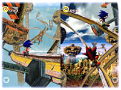
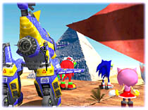
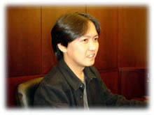
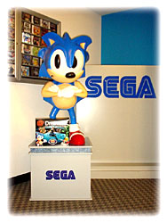

|
■プロフィール■ ＭＤ版の「ソニックザヘッジホッグ３」に始まり、ＳＳ版「ＮｉＧＨＴＳ」のメイン企画、ＤＣ版「ソニッ クアドベンチャー」「ソニックアドベンチャー２」のディレクター／メイン企画を勤める。 その他「ソニックＲ」「ソニック３Ｄ」「ソニックＪＡＭ」など、ソニック関係タイトルに企画協力。 今回の「ソニックアドベンチャー２」は日本より開発スタッフを引き連れ、アメリカはサンフランシスコに開発の場を移し その制作にあたっている。 |
|
■ 今回の「ソニックアドベンチャー２」のテーマ、コンセプトとは？
ずばり今回のコンセプトは「ＨＥＲＯ＆ＤＡＲＫ」です。 一見単純そうなテーマですが、実は このキーワードにたどり着くまでは非常に苦しみました（笑） スタッフのみんなも「ストーリー を本格的に！」「対戦をメインに！」など初期からやりたいことがたくさんあったのですが、それらすべてを実現しようとすると制作費が巨額になり、商品としてのウリも明確でなくなってしまう．．．そんな矛盾をすべて解決するキーワードが「ＨＥＲＯ＆ＤＡＲＫ」だったのです。 今回このコンセプトが比較的早い段階で決まったおかげで、企画設計はとてもスムーズに行えたと思います。 |
|
■ゲームとして遊びの部分での最大の魅力は何ですか？
 もちろん最大の魅力は「２Ｐ対戦」です。 単に真剣にゴールへ向って競走するのではなく 相手を攻撃したり、時間を止めたりなど、自然に対戦相手との楽しい会話が生まれるような 「ゲーム」を目指していますので、是非友達と盛り上がってください。 それと今回は、スピード感に「グラインド」や「サマーソルト」など小気味良いテンポを加えた ソニックとシャドウのアクション、破壊の爽快感と攻略性を増したテイルスとエッグマンのシュ ーティング、そして言葉による「推理」によって宝物を見つけるナックルズとルージュの宝さが し等、すべてがアクションとしての完成度を増していると思いますのでお楽しみに。 |
|
■ アドベンチャーとして前回同様、壮大なストーリーを追うことになると
思うのですがどんなところが見所になりますか？
 世界全体を巻き込んだかつてない大規模な事件、そしてそれを仕掛ける者（DARK）と阻止す る者（HERO）との交差する展開が見所ですね。 それと、なんと言ってもストーリー後半の急 展開．．．ん〜、これは話したいけど話せない（笑） 私は「ＮｉＧＨＴＳ」制作の頃より、アクショ ンゲームの「感動」は単にストーリーの展開だけによる感動ではなく、ストーリーの最高潮を アクションとしてプレイすることで「感動」を体験して欲しいと思ってきました。 そういう意味で 今回の「ソニックアドベンチャー２」も上手く「感動」を演出できたと思っています。 最後まであきらめず、是非エンディングまでがんばってくださいね。 |
■何故、開発の拠点をサンフランシスコに？
 不思議なもので住む場所が違うというだけで、嗜好も遊びも世界中で違うんです。味覚ま
で違うぐらいですから（笑） ワールドワイドなエンターテイメントを創造するソニックチームとし
て、世界の文化を肌で感じ、世界中の子供たちに心から楽しんでもらえる「遊び」を作り続け
ていけるよう、アメリカにも開発を設立しました。 特にソニックは、ＭＤシリーズでも日本で
「ソニック・ザ・ヘッジホッグ」を産み、アメリカで「同２、３」を育てたという経緯があります。 Ａ
ＤＶシリーズでも同じように育ててあげたいという親心も動機のひとつです（笑）
不思議なもので住む場所が違うというだけで、嗜好も遊びも世界中で違うんです。味覚ま
で違うぐらいですから（笑） ワールドワイドなエンターテイメントを創造するソニックチームとし
て、世界の文化を肌で感じ、世界中の子供たちに心から楽しんでもらえる「遊び」を作り続け
ていけるよう、アメリカにも開発を設立しました。 特にソニックは、ＭＤシリーズでも日本で
「ソニック・ザ・ヘッジホッグ」を産み、アメリカで「同２、３」を育てたという経緯があります。 Ａ
ＤＶシリーズでも同じように育ててあげたいという親心も動機のひとつです（笑）
|
|
■サンフランシスコでの開発ということで作品に反映された部分はありますか？
サンフランシスコは映画のロケ地として日本の皆さんにも馴染みある街なので、ＰＳＯの体験 版をプレイした方はお分かりかと思いますが、ソニックの最初のステージ「シティエスケープ」 はまさしくこのサンフランシスコの街並みをモチーフに創造したステージです。 ソニックのア クションステージとして街中を使いたいという構想は前作からあったのですが、そのイメージ を鮮明にしてしてくれたのがサンフランシスコという街なんです。 また、アメリカという国は圧 倒的なスケールと大自然をもつ国なので、その他至るところでその影響を受けていると思い ます。 前半の「グリーンフォレスト」というステージは、我々スタッフ全員が国立公園の密林 を何時間もさ迷い歩いた結晶です（笑） |
■ 私生活を含めてアメリカならでは、といったエピソードがあればお聞かせ下さい。
 ここでは紹介しきれないほど、良いこともあれば悪いこともたくさんあります（苦笑）
良いことの例では日本では馴染みのない「ハロウィン」を体験できたことですかね。 アメリカ
でハロウィンはクリスマスと肩を並べるほどの一大イベントで、本当にハロウィンの夜は子供
たちが仮装をして、お菓子をもらうために各家庭をまわるんです。 最初は半信半疑で何も
用意していなかったものですから、子供たちにあげるお菓子が無くって．．．しばらく部屋の
電気を暗くして身を潜めていました（苦笑） ２年目は逆に我が子を連れてお菓子狩りに出か
けましたけどね（笑） 悪いことの例はやっぱり治安ですかね。 私の住むアパートの中でも
銃を持った強盗騒ぎがおきたり、スタッフの中では車のタイヤを２本盗まれるなんて事件もあ
りました。
ここでは紹介しきれないほど、良いこともあれば悪いこともたくさんあります（苦笑）
良いことの例では日本では馴染みのない「ハロウィン」を体験できたことですかね。 アメリカ
でハロウィンはクリスマスと肩を並べるほどの一大イベントで、本当にハロウィンの夜は子供
たちが仮装をして、お菓子をもらうために各家庭をまわるんです。 最初は半信半疑で何も
用意していなかったものですから、子供たちにあげるお菓子が無くって．．．しばらく部屋の
電気を暗くして身を潜めていました（苦笑） ２年目は逆に我が子を連れてお菓子狩りに出か
けましたけどね（笑） 悪いことの例はやっぱり治安ですかね。 私の住むアパートの中でも
銃を持った強盗騒ぎがおきたり、スタッフの中では車のタイヤを２本盗まれるなんて事件もあ
りました。
|
|
■ ソニックが生誕１０周年を迎えますが飯塚さんにとってソニックとは？
 私もゲームを作り始めて今年で１０年目を迎えるのですが、そのほとんどをソニックとともに 歩んでいるんです。 そういう意味でソニックは「良きパートナー」ですかね。 |
|
■今後のソニックはどうなる？
昔はソニックに似た２Ｄ横スクロールアクションゲームが世の中に氾濫していましたが、１０周 年を迎えた今、気がつけばソニックのような「３Ｄハイスピードアクションゲーム」は、ソニック 以外存在しなくなってしまいました。 これは１０年かけて我々ソニックチームが築き上げてき た誇りであり、財産だと思っています。 これからもこの「ソニック」という唯一のゲームジャン ルを大切に、そして更なる発展＆進化を目指したいと思っています。 |
|

■ ソニックファンのみんなへ一言。
１０年間、ソニックを支えてくださった皆さんにとても感謝しています。 我々スタッフも、できる だけ皆さんの感謝の声に応えられるよう、今回の「ソニックアドベンチャー２」を制作しました。 特に前作を知っている方にはうれしいオマケ？も用意していますのでお楽しみに。 またドリ ームキャストを買ってくださった方や、これから購入予定の方にも、末永くドリームキャストと いうゲーム機で遊んでいただけるよう、前作以上に長く遊べるゲームに仕上がったと思いま す。 是非ソニック生誕１０周年を「ソニックアドベンチャー２」で楽しんでください。 |
|
Copyright (C) SONICTEAM, LTD. 2001 all rights reserved. |